Introducción
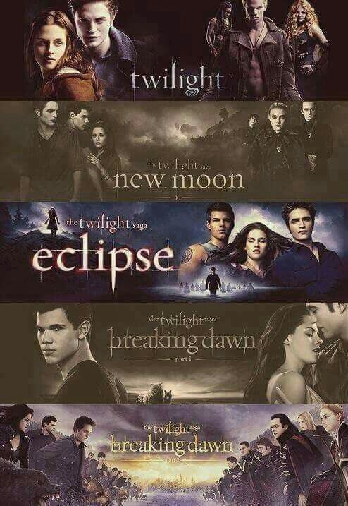
La Saga Crepúsculo fue escrita por Stephenie Meyer, comenzó como un sueño que tuvo la autora en 2003, el cual se transformó en uno de los éxitos literarios y cinematográficos más disruptivos del siglo XXI. Gran parte de este fenomeno se debió a su innovadora propuesta dentro del género de la fantasía romántica juvenil, que logró capturar la atención de la audiencia global al fusionar elementos sobrenaturales con conflictos emocionales cotidianos. La historia narra el romance entre Isabella Swan, una adolescente solitaria que se muda al lluvioso pueblo de Forks, Washington, y Edward Cullen, un vampiro que ha pasado décadas ocultando su naturaleza. Lo que empieza como una atracción inevitable evoluciona en una trama compleja que explora la inmortalidad, el sacrificio y los límites del amor adolescente.
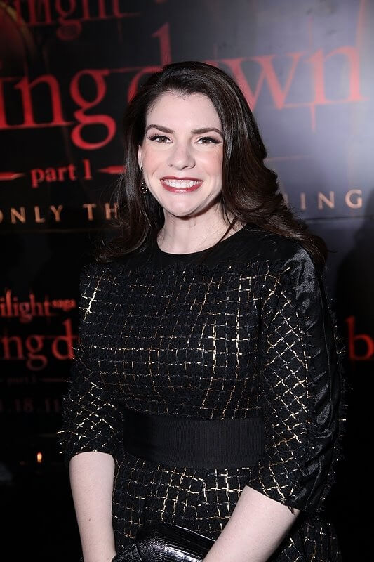
Tras la publicación del primer libro en 2005, la obra de Stephenie Meyer rápidamente se posicionó como un pilar del mercado editorial, pero su verdadera explosión de fama mundial ocurrió entre 2007 y 2008. Fue en este periodo cuando se tomó la decisión estratégica de adaptar la historia a la gran pantalla, un proyecto liderado por la productora Summit Entertainment. El objetivo era trasladar la atmósfera melancólica de los libros a un lenguaje visual que mantuviera la esencia de la novela: un romance intenso rodeado de misterio. Esta transición del papel al cine no solo consolidó la carrera de Meyer como una autora de culto para el público joven, sino que marcó el inicio de una de las franquicias más lucrativas de la historia de Hollywood.
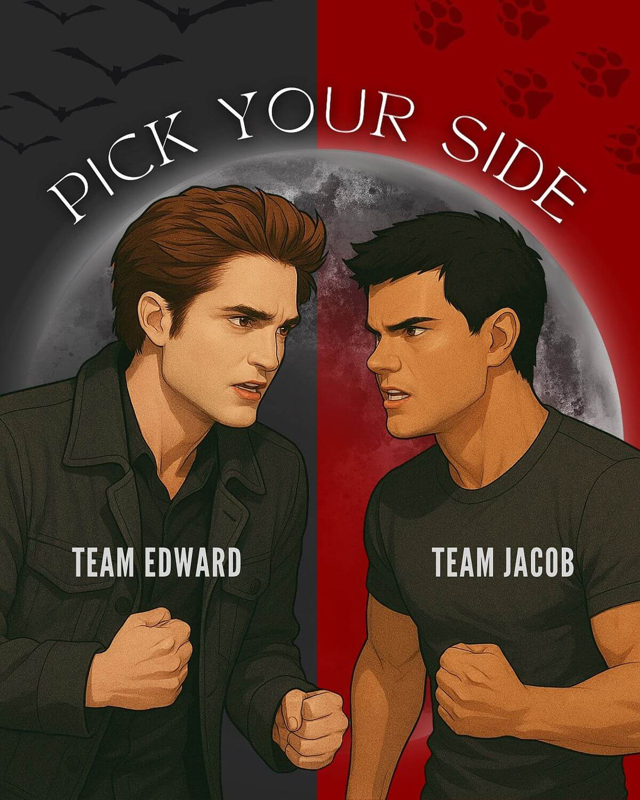
Esta apuesta cinematográfica no tardó en rendir frutos, transformando el éxito de los libros en una franquicia de cinco películas que consolidó el fenómeno global conocido como "Twilightmania". La química entre los protagonistas y la atmósfera melancólica de los paisajes, se convirtieron en sellos distintivos de la saga que cautivaron a millones. Además, la competencia entre los seguidores de los personajes los icónicos "Team Edward" y "Team Jacob" generó una participación comunitaria sin precedentes en la cultura digital, elevando el impacto de la obra mucho más allá de la pantalla y convirtiéndola en un debate social constante.
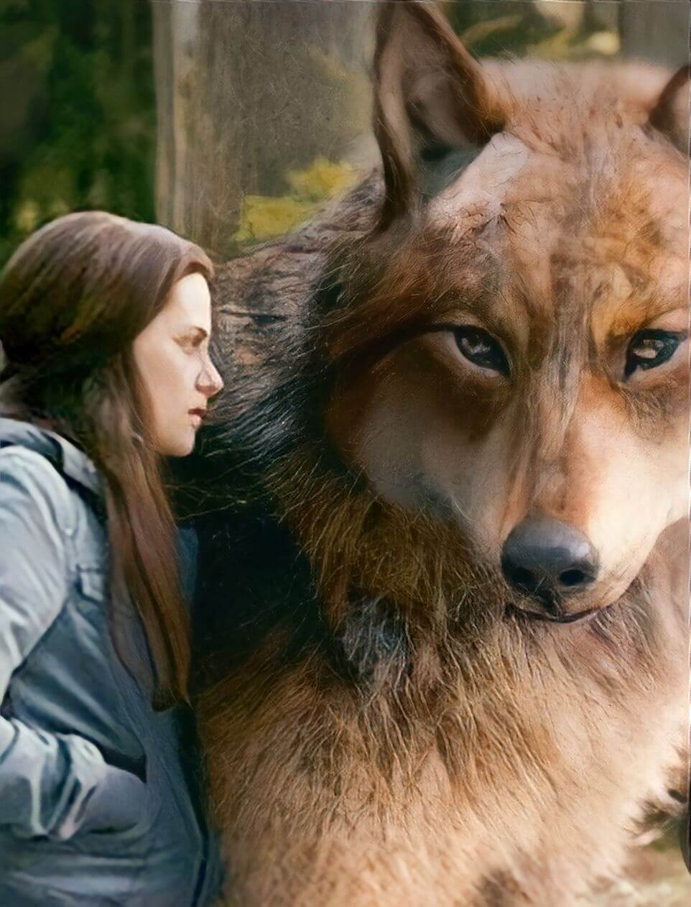
Más allá del romance, la saga introdujo una mitología propia que redefinió a las criaturas sobrenaturales para una nueva generación. Meyer presentó a los licantropos, un linaje de protectores de la tierra capaces de transformarse en lobos gigantes, cuya rivalidad ancestral con los vampiros añadió una capa de tensión y acción a la narrativa. Esta convivencia forzada entre el clan Cullen y la tribu Quileute (hombres lobos) no solo expandió el universo de la historia, sino que exploró temas profundos como la lealtad familiar, el destino y la lucha por proteger la identidad en un mundo donde lo imposible es una realidad cotidiana.
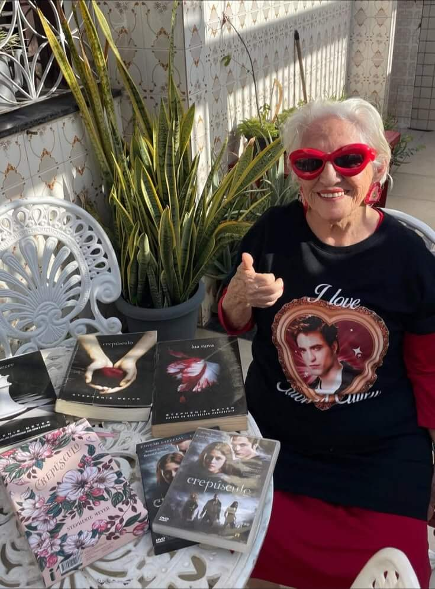
Años después de su estreno, el impacto de Crepúsculo permanece vigente como el hito que cambió para siempre la industria del entretenimiento para jóvenes adultos. La saga demostró que las historias de fantasía urbana podían dominar tanto las librerías como las taquillas mundiales, abriendo el camino para innumerables adaptaciones posteriores. Hoy en día, la obra de Meyer es recordada no solo como una historia de amor eterno, sino como un fenómeno cultural que definió la estética de toda una década y que continúa siendo un punto de referencia esencial para entender el poder de las audiencias globales.
Personajes
Isabella Swan
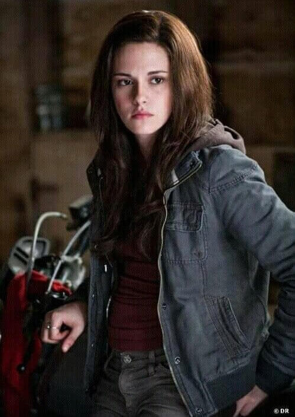
Es una adolescente de 17 años con una personalidad bastante madura, solitaria y no encaja mucho con la gente de su edad. Al principio de la historia, se muda al pueblo de Forks para vivir con su papá, donde su vida cambia por completo cuando conoce a Edward Cullen.
Bella posee una particularidad que ni ella misma conoce, su mente es un "escudo" psíquico totalmente cerrado. Esto significa que es inmune a cualquier poder mental de los vampiros, lo que la convierte en un misterio fascinante para el mundo sobrenatural.
Edward Cullen
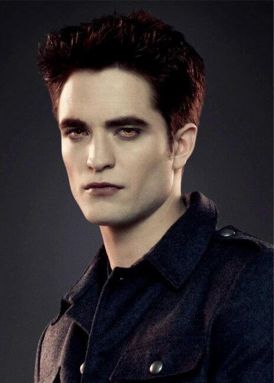
Es un vampiro que fue transformado en el año 1918, cuando tenía 17 años, por lo que quedó congelado a esa edad para siempre. Es una persona caballerosa, protectora y muy chapado a la antigua.
Edward pertenece a la familia Cullen, una secta de vampiros que se distingue por su ética y moralidad, son vampiros que decidieron romper con el instinto salvaje de su especie y solo alimentarse de sangre de animales.
Posee el poder de leer mentes de cualquier persona o criatura, con la única excepción de Bella.
Jacob Black
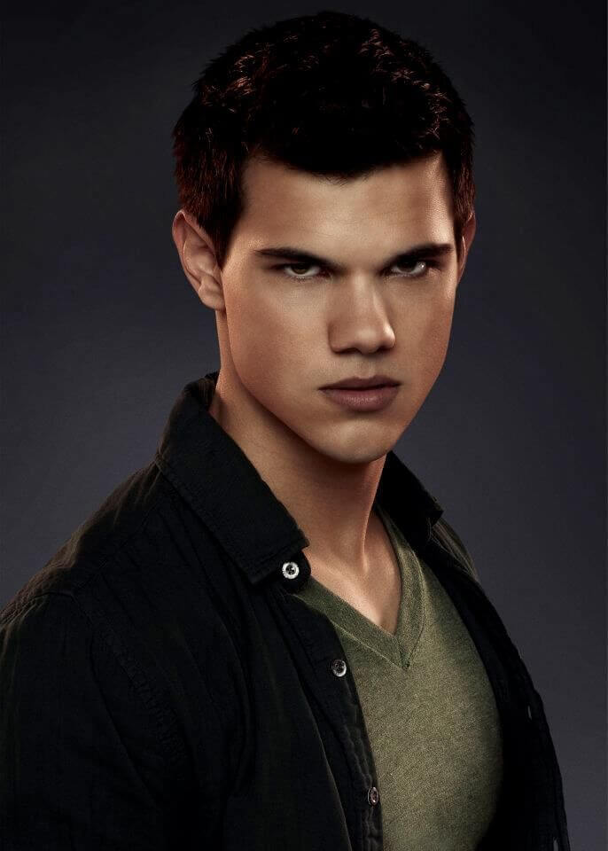
Es un chico nativo de la tribu Quileute, vive en una reserva cercana a Forks. Al comienzo de la saga es amigo incondicional de Bella, con el tiempo descubre que en su sangre lleva un gen ancestral que lo transforma en un lobo gigante.
Jacob es un personaje clave en la saga, cuya transformación y conflicto interno añaden profundidad a la narrativa. Su especie es enemiga natural de los vampiros, conviven en paz solamente con los Cullen porque tienen un acuerdo.
Charlie Swan
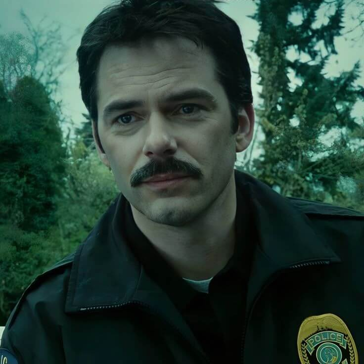
Es el jefe de policía de Forks y el papá de Bella. Es un hombre de pocas palabras, protector y fanático de la cerveza y los deportes. Representa el lado humano, normal y realista de la historia; no entiende nada del caos sobrenatural que pasa a su alrededor, pero da la vida por su hija.
La Familia Cullen
Son el grupo de vampiros que tratan de vivir en armonía con los humanos y lobos, mientras se encargan de proteger a Bella como si fuera una integrante más de la familia.
Alice Cullen:
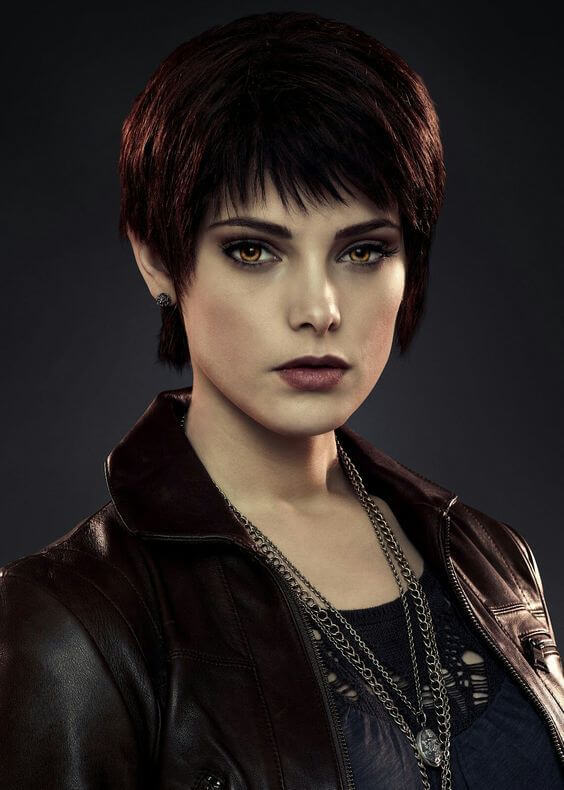
Tiene el poder de ver las visiones del futuro según las decisiones de la gente. Es súper alegre y la mejor amiga de Bella.
Jasper Hale:
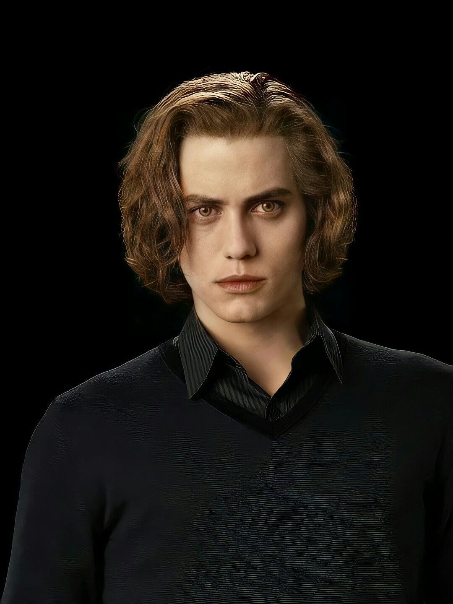
Pareja de Alice. Puede sentir y manipular las emociones de los demás. Al ser el último en unirse al clan, lucha constantemente contra su sed de sangre.
Rosalie Hale:
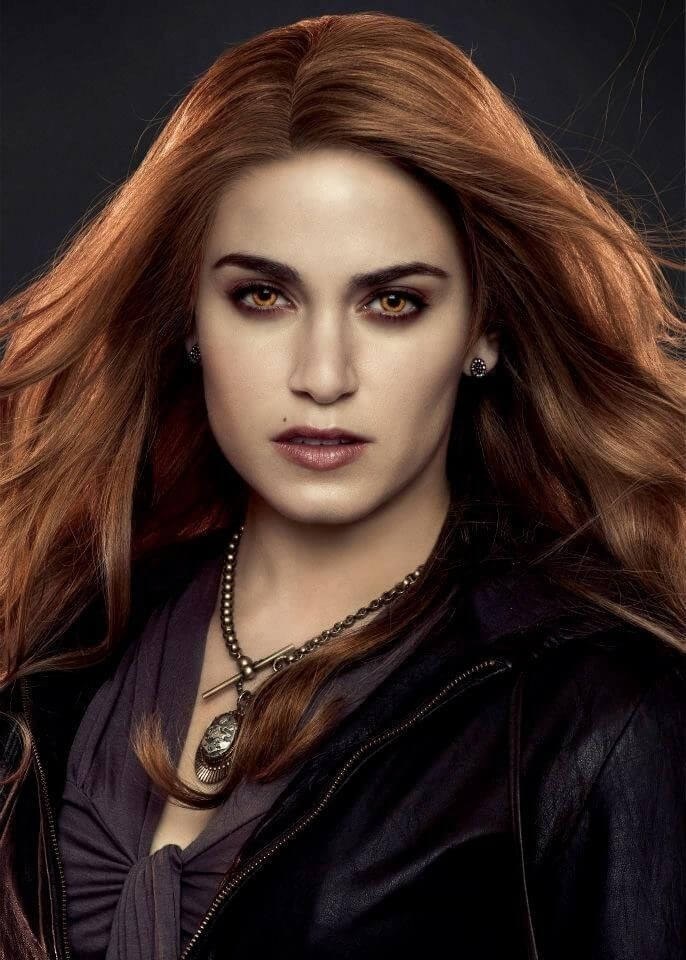
Una vampiresa rubia que siente celos de la humanidad de Bella, por lo que al principio la trata bastante mal.
Emmett Cullen:
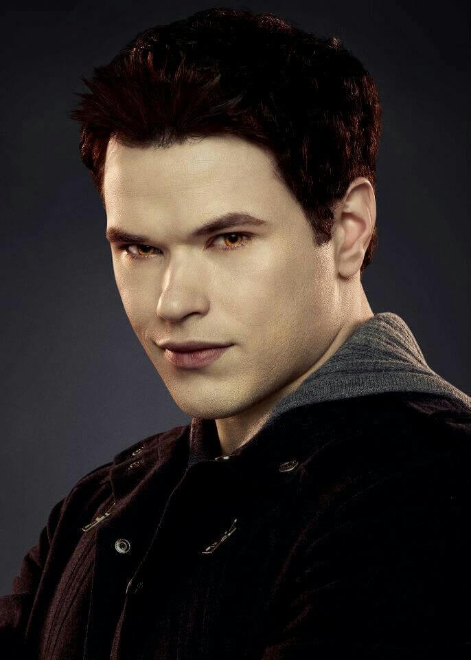
La fuerza bruta del clan. Es súper competitivo, musculoso y grandote, pero tiene un sentido del humor divertido.
Dr.Carlisle Cullen:
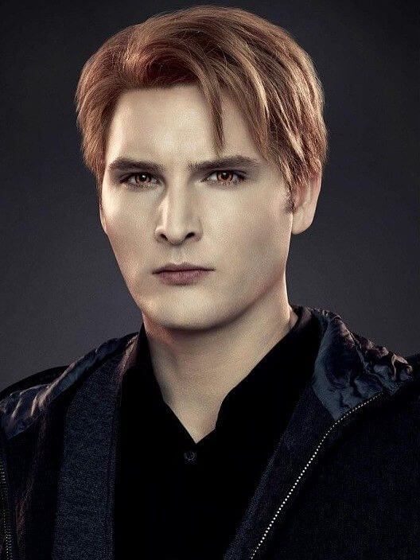
El patriarca y médico del pueblo. Es el que transformó a la mayoría de sus "hijos" para salvarlos de la muerte y posee un autocontrol sobrehumano.
Películas
La saga de Crepúsculo se compone de cinco películas, basada en los libros de Stephenie Meyer. Estas películas fueron lanzadas entre 2008 y 2012, cada una de ellas se centró en un libro específico de la serie, el último de los libros fue dividido en dos partes.
Crepúsculo (2008)
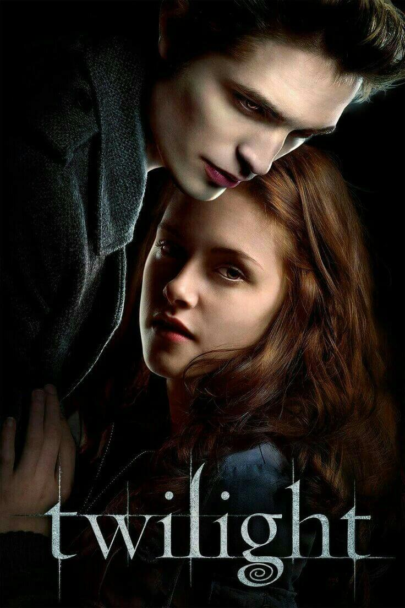
Bella llega a Forks, conoce al misterioso Edward en la escuela y descubre su secreto: es un vampiro. Se enamoran perdidamente y de una forma muy intensa, pero la vida de Bella corre peligro cuando un clan de vampiros nómades y despiadados empieza a cazarla por diversión.
Ver trailerLuna Nueva (2009)
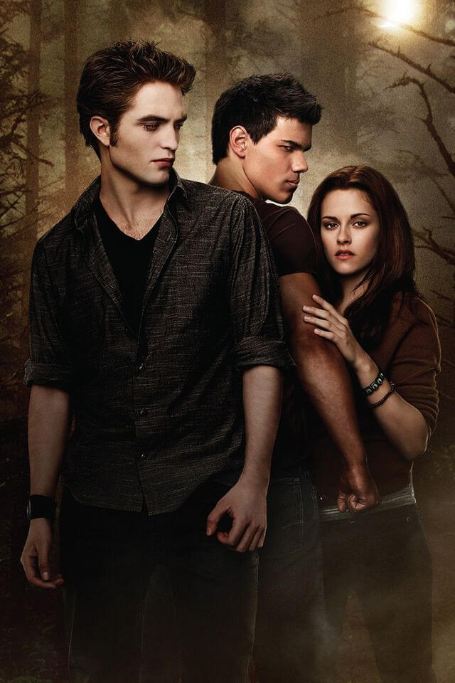
Tras un terrible accidente que pone en riesgo la vida de Bella, Edward decide alejarse de ella en un intento de protegerla, dejandola en una profunda depresión. En su peor momento, su amigo Jacob la ayuda a salir adelante, mientras descubre que se convierte en hombre lobo y empieza a formar parte de una manada. Aparecen tambien los Vulturi quienes son la organizacion a cargo de mantener la existencia de los vampiros en secreto y creen que Bella es una amenaza. Es luego de esta película que se desencadena el #TeamEdward y #TeamJacob, porque se ocasiona el famoso tríangulo amoroso de la saga.
Ver trailerEclipse (2010)
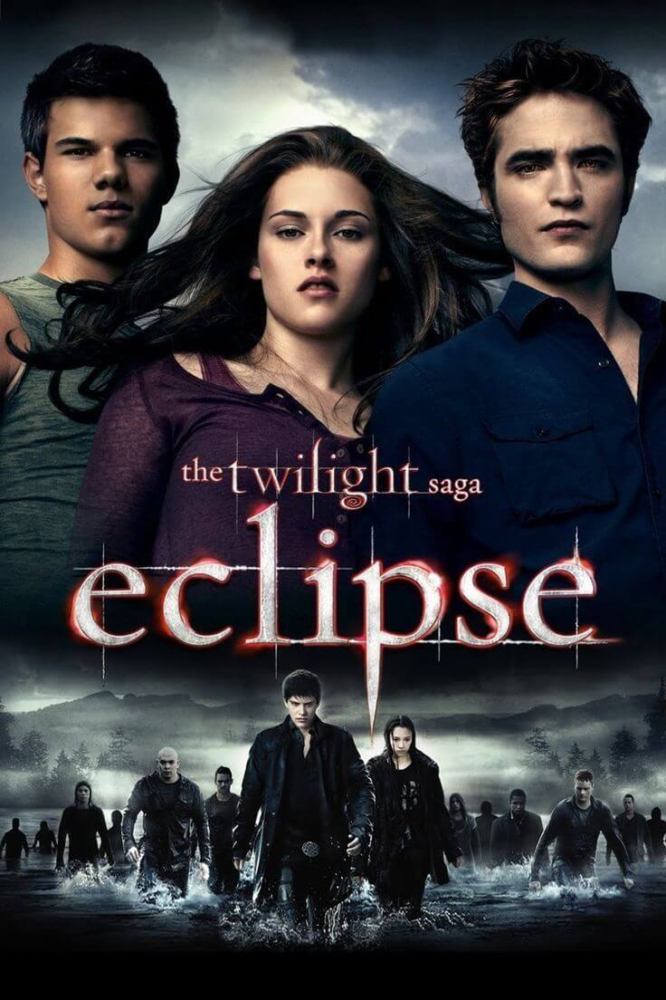
Una horda de vampiros salvajes y recién convertidos ataca el pueblo para asesinar a Bella por venganza. Para salvarla, los vampiros (los Cullen) y los hombres lobo (la manada de Jacob) se ven obligados a romper su odio histórico y unirse en una tregua para pelear juntos.
Ver trailerAmanecer - Parte 1 (2011)
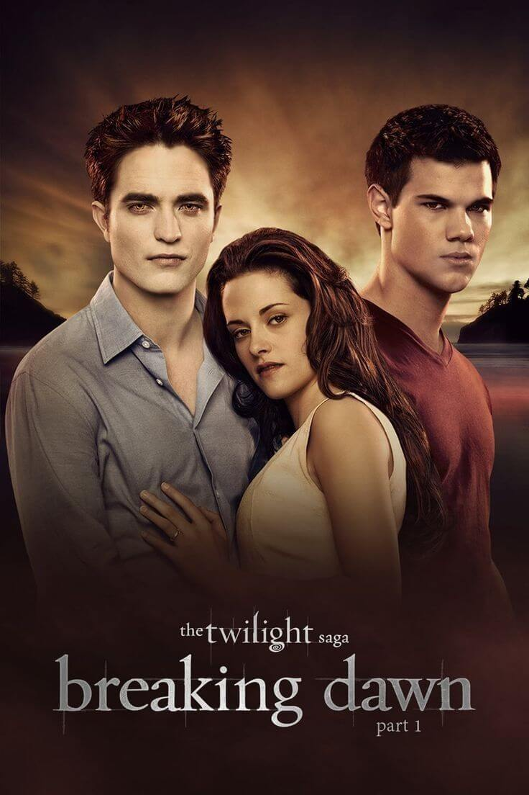
Bella y Edward finalmente se casan para degracia de Jacob, pero durante la luna de miel ocurre algo imposible: Bella queda embarazada de un bebé mitad humano y mitad vampiro. El embarazo avanza a una velocidad sobrehumana y consume su vida, obligando a Edward a morderla para salvarla de la muerte.
Ver trailerAmanecer - Parte 2 (2012)
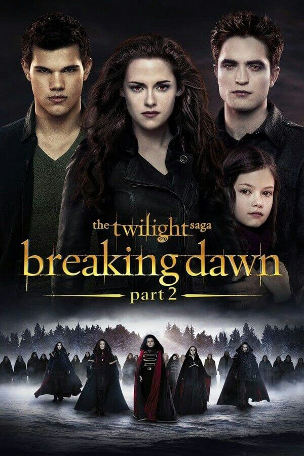
Bella despierta convertida en una poderosa vampira. Sin embargo, la realeza de los vampiros (los Vulturi) cree erróneamente que la hija de Bella es una aberración prohibida por las leyes vampíricas. Los Cullen deberán recorrer el mundo buscando aliados para evitar una guerra total, para la cual la manada de lobos tambien se prepara.
Ver trailerLibros vs Películas
La saga de Crepúsculo ha sido adaptada a la pantalla grande, pero las películas no siempre han logrado capturar la esencia de los libros originales.
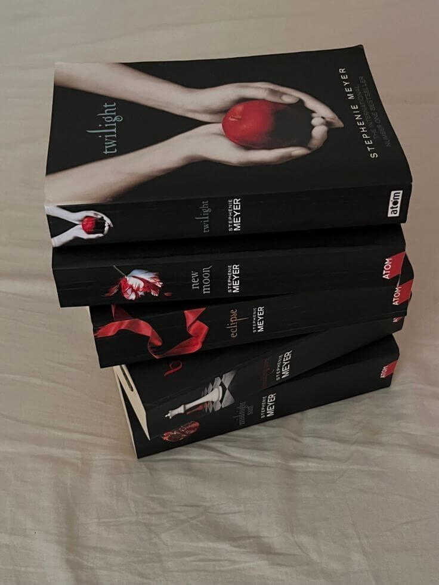
La intensidad del primer encuentro
En la película, cuando Bella se sienta al lado de Edward en la clase de biologia, él se tapa la nariz de manera exagerada y casi asqueada. Tanto para Bella (que hasta cree tener mal olor), como para alguien que no conoce la historia se ve raro, pero el libro explica que el olor de la sangre de Bella era tan peligrosamente irresistible para él que tuvo que contener la respiración para evitar ceder a su instinto.
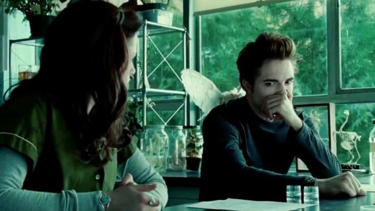
El clímax de Amanecer- parte 2
En el libro final, todo el conflicto con la realeza vampírica se resuelve charlando y negociando de forma pacífica, pero los directores de la película sabían que el público del cine quería acción, así que inventaron una batalla final épica y violenta que al final no es lo que parece.
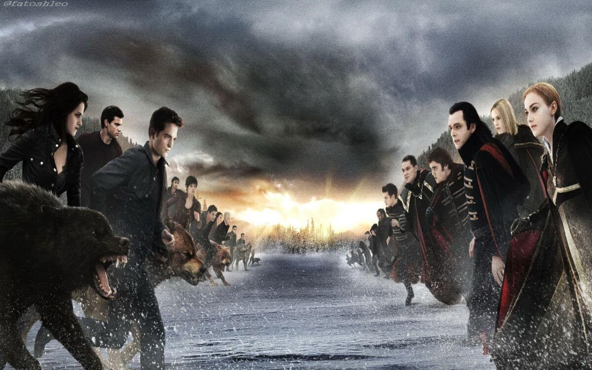
El color de ojos en los vampiros
En los libros los ojos de los vampiros puede variar y en las peliculas esto es algo que pasa desapercibido:
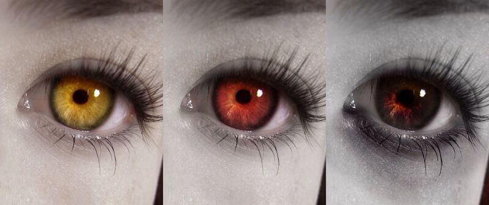
- Ojos rojos: Los tienen los vampiros más antiguos que consumen sangre humana, tambien existen los ojos de color rojo brilloso que los tienen los vampiros neofitos (convertidos recientemente).
- Ojos dorados: Los poseen los vampiros que se alimentan únicamente de sangre animal, como los Cullen.
- Ojos negros:Cuando los vampiros se encuentran sedientos y no se han alimentados, sus ojos se tornan de color negro "carbón".
Detalles de poderes que no se explican en las películas
Jasper y Alice son los únicos que pueden utilizar sus poderes sobre Bella a pesar de su escudo mental y esto se ve en las películas. En el caso de Jasper se debe a que él percibe las emociones basandose en procesos fisiologicos, no mentales y en cuanto a Alice, ella se guía para sus premoniciones por las acciones que toma una persona no por sus pensamientos.
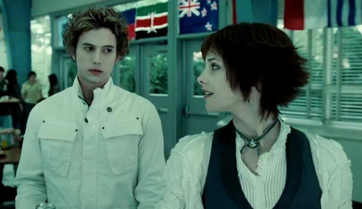
Elenco
- 🍎Kristen Stewart como Bella Swan🍎
- 🍎Robert Pattinson como Edward Cullen🍎
- 🍎Taylor Lautner como Jacob Black🍎
- 🍎Billy Burke como Charlie Swan🍎
- 🍎Ashley Greene como Alice Cullen🍎
- 🍎Jackson Rathbone como Jasper Hale🍎
- 🍎Nikki Reed como Rosalie Hale🍎
- 🍎Kellan Lutz como Emmett Cullen🍎
- 🍎Peter Facinelli como Carlisle Cullen🍎
¿Sabías que...?
Taylor y los Power Rangers azules:
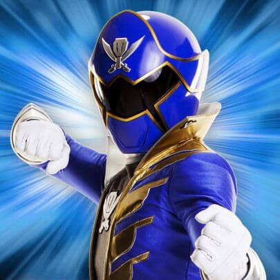
Para la película "Luna Nueva", la producción estuvo a punto de reemplazar a Taylor Lautner por Michael Copon (el Power Ranger Azul de "Time Force") debido al cambio físico que requería el personaje de Jacob Black. Para conservar su papel, Taylor entrenó duro y sumó 14 kilos de músculo
Irónicamente, Lautner comenzó su carrera actoral de niño impulsado por su instructor de karate, quien también fue un Power Ranger Azul en "Lightspeed Rescue".
Robert Pattinson casi es despedido:
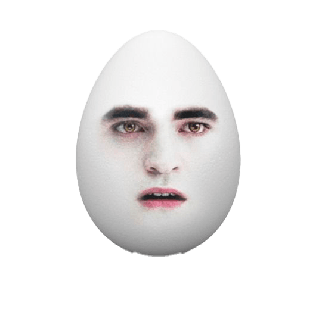
El actor quería que Edward se viera súper atormentado, deprimido y serio, por lo que se la pasaba actuando con cara de enojado y peleando con los directores. Los productores se cansaron tanto de su actitud que sus propios representantes tuvieron que viajar al set de filmación para advertirle: "O sonreís un poco y cambiás la onda, o si no, hoy mismo te echan y contratan a otro". Al día siguiente, Robert apareció con la mejor sonrisa del mundo.
El romance secreto y el escándalo de infidelidad:
Al principio de la primera película, la directora Catherine Hardwicke vio la química explosiva que tenían Kristen y Robert, por lo que tuvo una conversacion con él para hacerle jurar que no se iba a meter con ella porque podia ser un problema para la pelicula. Obviamente no resistieron, se enamoraron y mantuvieron un noviazgo súper intenso por años.
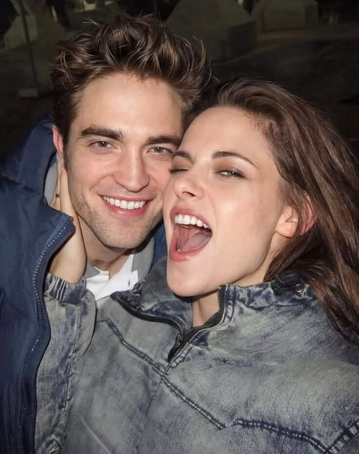
Sin embargo, el verdadero caos estalló en 2012, justo antes del estreno de la última película (Amanecer - Parte 2). Salieron a la luz unas fotos de los paparazzis donde se veía a Kristen Stewart siéndole infiel a Robert Pattinson con Rupert Sanders director de una pelicula que ella estaba protagonizando.
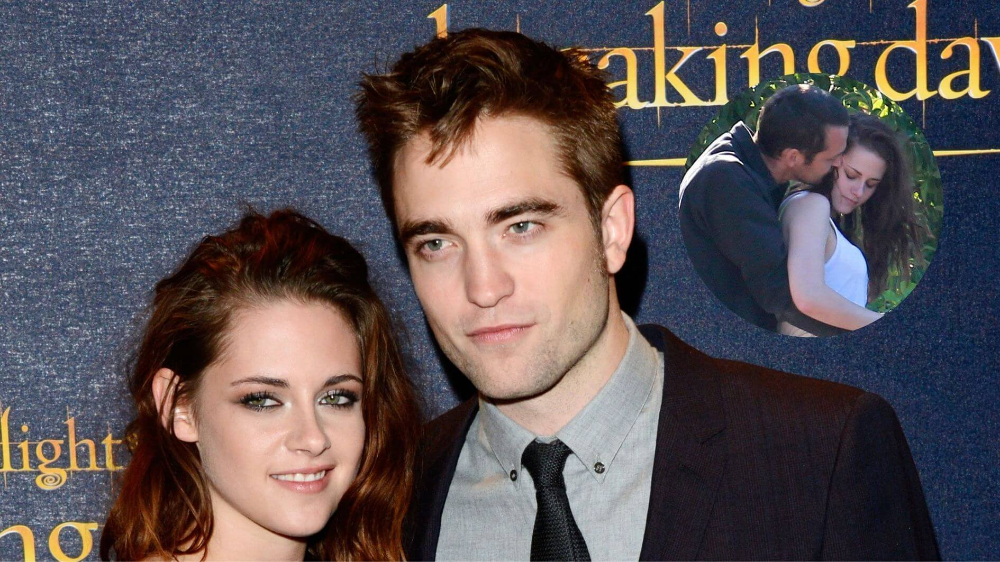
Aunque intentaron volver un breve tiempo para no arruinar la promoción de la última película, la relación ya estaba rota y el set de prensa final fue mega incómodo para los dos.